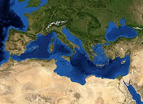

STRONA GŁÓWNA
Pierwsza strona | Druga Strona | Trzecia Strona
Region geograficzny i historyczny, obejmujący obszar basenu Morza Śródziemnego, na styku trzech kontynentów Starego Świata: Europy, Azji i Afryki. Obszar ten od kilku tysiącleci połączony jest więzami historycznymi, kulturowymi, politycznymi, handlowymi i gospodarczymi. Region ten jest kolebką najstarszych cywilizacji i wielkich religii monoteistycznych, był miejscem narodzin wielu prądów umysłowych. Stąd na cały świat promieniowały nowe osiągnięcia w sztuce i technice, wreszcie stąd wyruszały wielkie wyprawy na podbój Nowego Świata. Współcześnie do krajów śródziemnomorskich należą: Gibraltar, Hiszpania, Francja, Monako, Włochy, Malta, Słowenia, Chorwacja, Bośnia i Hercegowina, Czarnogóra, Albania, Grecja, Turcja, Cypr, Syria, Liban, Izrael, Autonomia Palestyńska, Egipt, Libia, Tunezja, Algieria, Watykan i Maroko.
Morze międzykontynentalne leżące pomiędzy Europą, Afryką i Azją, o powierzchni około 2,5 mln km². Zasolenie wód Morza Śródziemnego wynosi 33–39‰. Na zachodzie jest połączone Cieśniną Gibraltarską z Oceanem Atlantyckim, na wschodzie przez cieśninę Dardanele łączy się z morzem Marmara i dalej przez cieśninę Bosfor z Morzem Czarnym, zaś przez Kanał Sueski z Morzem Czerwonym i dalej z Oceanem Indyjskim. To śródlądowe morze jako jedyne na świecie otoczone jest lądami należącymi do trzech części świata. Już przed tysiącami lat kwitły tu kultura i nauka, rozwijały się rolnictwo, rzemiosło, handel i żegluga. Na obszarze tym pozostały bogate pamiątki starych cywilizacji – pojedyncze zabytki i całe miasta. Wspólną cechą tych państw, poza dostępem do morza, jest klimat i roślinność śródziemnomorska.
